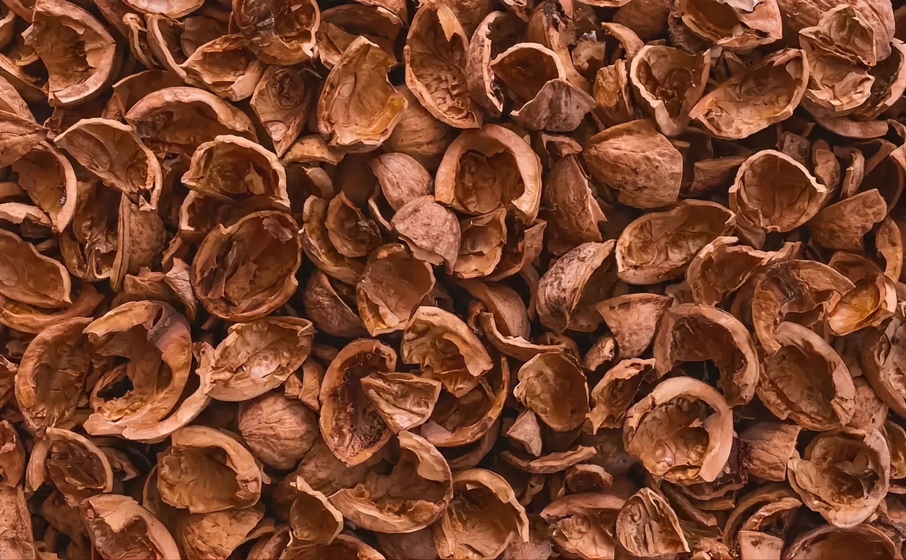
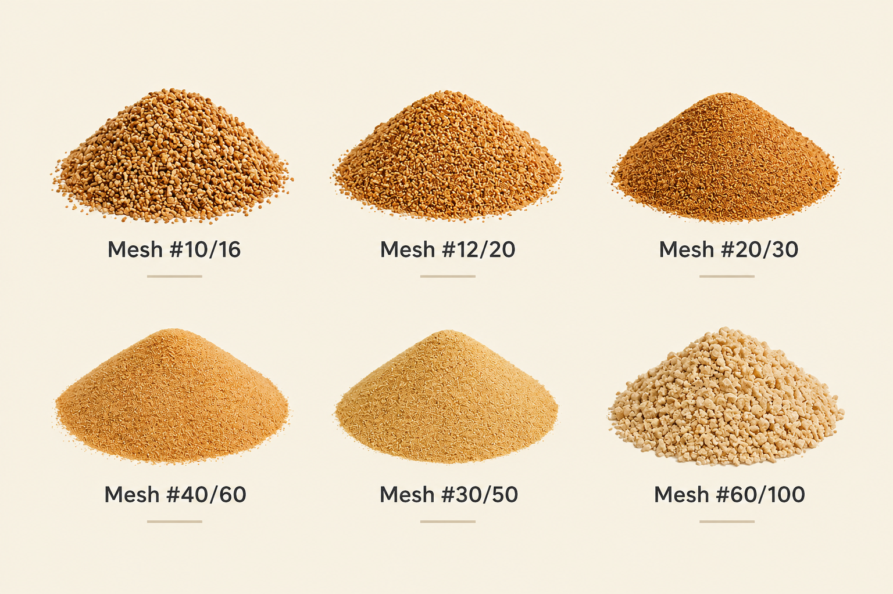

Cáscara de nuez y carozo de aceituna
Líderes en el mercado, abasteciendo diferentes granulometrías a un amplio abanico industrial.
18 años de excelencia en harinas y abrasivos vegetales
Somos una empresa argentina fundada en 2006, dedicada a la molienda de materias primas agro orgánicas como la cáscara de nuez y el carozo de aceitunas. Nuestra calidad nos posicionó en primer lugar en Argentina y nos permitió exportar a Chile, Uruguay, Brasil, Colombia, Venezuela, México y España.
En 2021 creamos una filial en São Paulo, Brasil, bajo el nombre INNOVATI Ltd. Trabajamos en colaboración con nuestros clientes para obtener un material adecuado para cada necesidad.

Seleccionadas a exigencia de cada cliente
Desde polvos muy finos hasta partículas gruesas anguladas o redondas, bajo estándares internacionales.
Un mismo origen, muchas industrias
Cosmetología
Exfoliantes en distintos tamaños de grano, polvos y texturizadores para jabones, lavados de manos y exfoliantes faciales. Una alternativa sustentable a las microperlas de plástico, prohibidas desde 2015 en EEUU y el Reino Unido.
Más info →
Abrasivos
Abrasivos medios, de 3 a 4 Mohs: remoción de graffitis y moho, pulido, blasting o arenado ecológico, decapado naval y fabricación de discos y lijas.
Más info →
Bio-materiales compuestos
Rellenos para adhesivos, resinas, madera laminada, muebles y pinturas antideslizantes. Bajo consumo de energía, sin desperdicios y con ciclo de vida circular.
Más info →